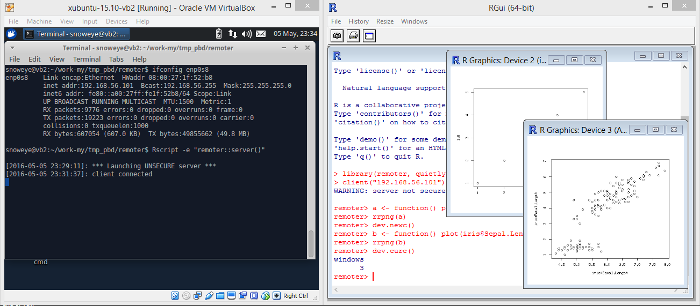

This Tutorial 5 is all about remoter package using
Linux as a server and windows as a client. The server generates
a plot but the client displaies the plot.
The server has ip address "192.168.56.101" which is a xubuntu system
run in a VM where the host is Windows 8.
The next may be out of date but show main ideas.
A newer demo can be found on my github repo at
snoweye/demo_gif.
The server commands are to show ip address and run a server (remoter) as
|
The client code is to generate two plots on the server but display on the local
devices. The code is as simple as the next.
|
The results are given in next image.
On the left is the server running in Linux from VM.
On the right is the client running in Windows 8 as the host.
(click to enlarge the image).
